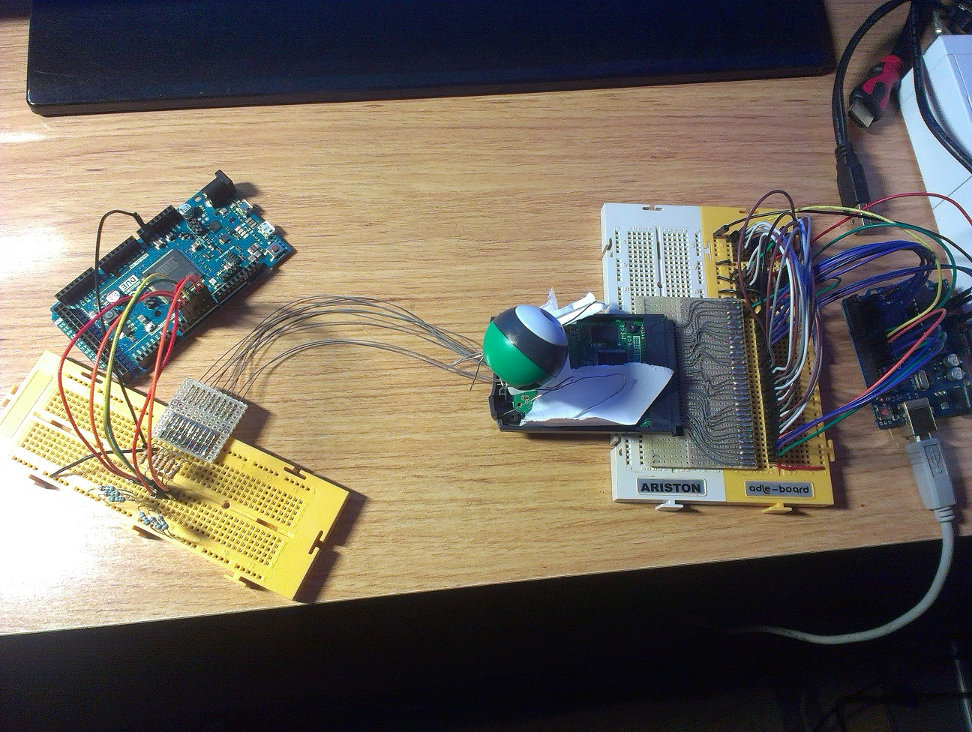

Over the last few weeks I've been doing some reverse engineering on the GB Camera and I think I've documented it good enough for most things. I've reversed the cartridge controller registers and measured the capture timings. The only thing that I can't understand is the level/gain control of the sensor (its datasheet is really bad) but it shouldn't matter for an emulator. I've implemented this in GiiBiiAdvance and it's working perfectly (you'll have to wait for the next version if you want to check it, though), so I guess that's all that matters.
And a pic of my hardware setup (click to zoom):
The repository is here: https://github.com/AntonioND/gbcam-rev-engineer
The first release is here:
https://github.com/AntonioND/gbcam-rev-engineer/releases/tag/v1.0
PS: Did I mention before that I won the GBdev 2014 compo? :